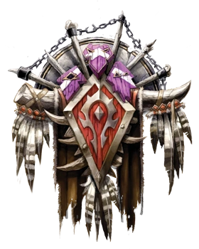

| № | Что делать | Сделано? |
|---|---|---|
| 1) | Run to Malaka'Jin at #COORD[71,94] | |
| 2) | Accept #GETBlood Feeders# | |
| 3) | Turn in #INLetter to Jin'Zil# at #COORD[74,97]# in the cave ... accept #GETJin'Zil's Forest Magic# ", x = 74, y = 97, zone = "Stonetalon Mountains" | |
| 4) | Then go accept #GETArachnophobia# from the Wanted poster at #COORD[59,75]#", x = 59, y = 75, zone = "Stonetalon Mountains" | |
| 5) | Accept #GETBlood Feeders#Go do #DOBlood Feeders# along with #DODeepmoss Spider Eggs# and #DOArachnophobia# around #COORD[54,76]# NOTE: you can skip Arachnophobia for now, you'll return here later...", x = 54, y = 76, zone = "Stonetalon Mountains" | |
| 6) | Then turn in #INZiz Fizziks# at the goblin in the hut at Windshear Crag, #COORD[58,62]# ... accept #GETSuper Reaper 6000# ", x = 58, y = 62, zone = "Stonetalon Mountains" | |
| 7) | Then do: #DOGoblin Invaders# and #DOSuper Reaper 6000# (the mobs are just north in Windshear Crag)" | |
| 8) | Then turn in #INSuper Reaper 6000# #COORD[58,62]# ... accept #GETFurther Instructions# ", x = 58, y = 62, zone = "Stonetalon Mountains" | |
| 9) | Run to Sun Rock Retreat at #COORD[46,59]#.", x = 46, y = 59, zone = "Stonetalon Mountains" | |
| 10) | Turn in #INArachnophobia# and #INKaya's Alive# if you did the escort quest" | |
| 11) | Get FP there." | |
| 12) | Run up the little #VIDEOpathway# and accept #GETBoulderslide Ravine# and #GETTrouble in the Deeps# at #COORD[47,64]#", x = 47, y = 64, zone = "Stonetalon Mountains" | |
| 13) | Then go do #DOBoulderslide Ravine# at #COORD[61,92]#", x = 61, y = 92, zone = "Stonetalon Mountains" | |
| 14) | Then turn in #INBlood Feeders# #COORD[71,95]#", x = 71, y = 95, zone = "Stonetalon Mountains" | |
| 15) | Turn in #INGoblin Invaders# at #COORD[35,27]# in the Barrens ... accept #GETShredding Machines# (I SKIP #NPCThe Elder Crone# )", x = 35, y = 27, zone = "The Barrens" | |
| 16) | Hearth to XRs." | |
| 17) | Run north to Ashenvale (stopping along the way to turn in #INReport to Kadrak# (at 48.5) but SKIP #NPCThe Warsong Reports# ", x = 48, y = 5, zone = "The Barrens" |